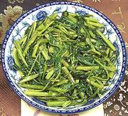

|
Water Spinach (Ong Choy)China | ||||
| Serves: Effort: Sched: DoAhead: |
4 side ** 20 min Some |
Ong Choy is quite popular in Asian communities and makes a very simple stir fry with good flavor and interesting texture - but it may be illegal in your state. This recipe can also be made without the fermented tofu or with yellow bean sauce instead. | |||
|
1 1/3 1 1 1 1 2 tt |
# in cl T T T T |
Ong Choy (1) Ginger Garlic Oil Fermented Tofu (2) Rice Wine (3) Water Salt |
Prep - (15 min)
|